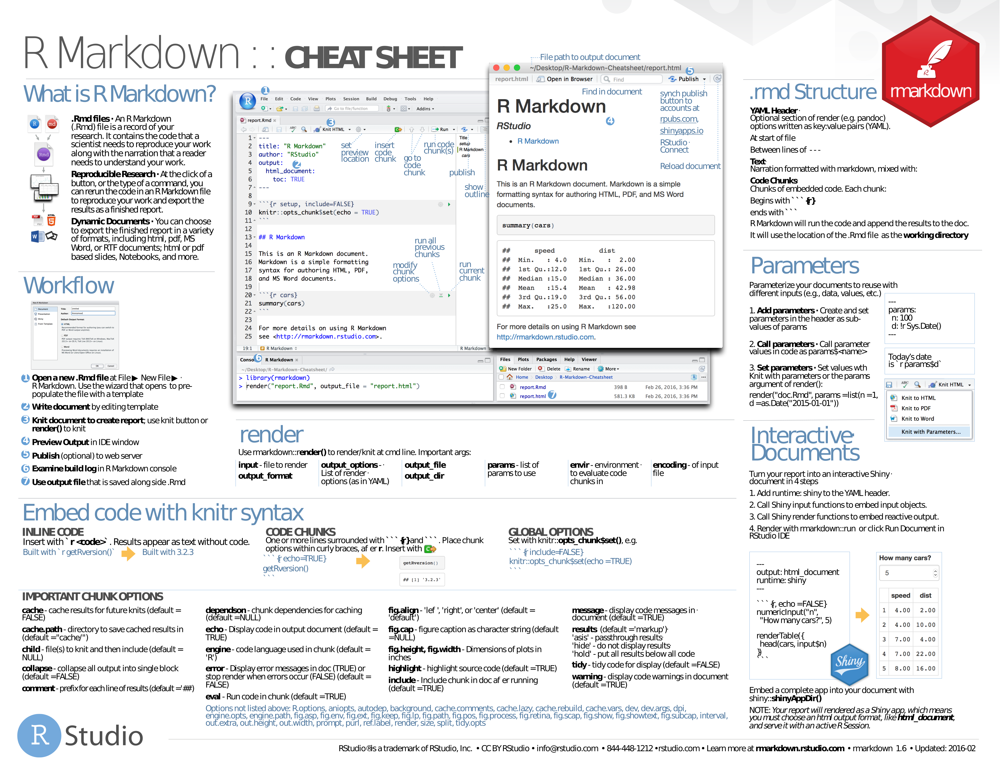
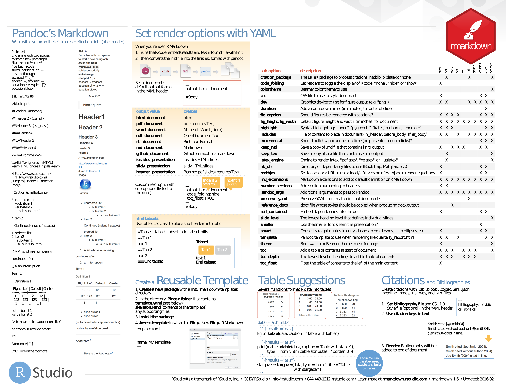

Basics Cheat Sheets
Basics¶
- Base R. PDF.


- Control Structures. PDF.

Import and Tidy up¶
- readr and tidyr. PDF.


- Tidy Data. PDF only (article).
Advanced¶
- Advanced R. PDF.


Edition & Reporting¶
RMarkdown¶
- R Markdown Reference Guide. PDF only.
- syntax, chunk options, pandoc options, slide formats, LaTeX options
- R Markdown. PDF.


RStudio¶
- RStudio. PDF.